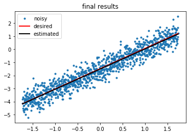

Regression modelling
A functional linear regression model made from scratch using numpy and matplotlib which can predict a line of best fit when given a set of data. The model works by using gradient descent to minimise the error in the predicted dataset. For the next step I am thinking about expanding the model so that it can work on data with more independent variables and possibly polynomial regression.
Doodljump AI
I have been working on making an AI in Processing to play doodle jump. This is an ongoing project and is turning out to be very complicated, but I am enjoying the challenge and learning new skills and concepts! I had to code the game from scratch in the Processing language which was the easiest step, and am now working on designing and implementing the neural network within the game. I have managed to get to the stage where the network is giving inputs to the player, so the next stage is teaching the neural network to learn from its failures. The network consists of an input layer which takes variables from within the game, a hidden layer and an output layer which decides whether the player should go left, right, or do nothing.
Polyword solver
I have written a web app which solves polyword puzzles, when the aim is to find as many words as possible consisting of 9 given letters, including a "key" letter which must be in every word. Feel free to check it out here.
Random number trivia API
I wrote a script which fetches a random fact about a number from an API, I wrote it to help learn about APIs. Unfortunately the API I used uses http rather than https, so it won't work here... I did do it though!
Simple algorithm optimisation with Theano

I am currently following a lecture series on deep learning in
Python using Theano and Keras, this was the first simple model,
it optimises a single layer perceptron to estimate the parameters
of a graph based on a group of noisy points.
A genetic algorithm with dots
This is the same as the post on the home page, it also belongs here!
A simple genetic algorithm which optimises the path of some dots
around some obstacles to reach a goal!